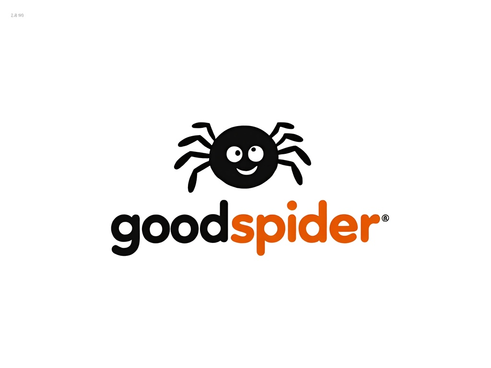

GoodSpider ships focused web products: literary exploration, interactive fiction, map zoom workflows, and open UPRN tooling for the UK.
Literature & writing
Follow books and authors on a literary map—see where fiction meets the real world, then wander from place to place.
Author branching adventures in the browser: write snippets, wire choices, and export when your story is ready.
Maps & place data
Work with map zoom levels and stacked tile workflows—built for people who reason about maps as more than a single basemap.
Explore UK UPRNs on a map, refine addresses where it matters, and pull CSV or OSM-friendly data for your own pipelines.